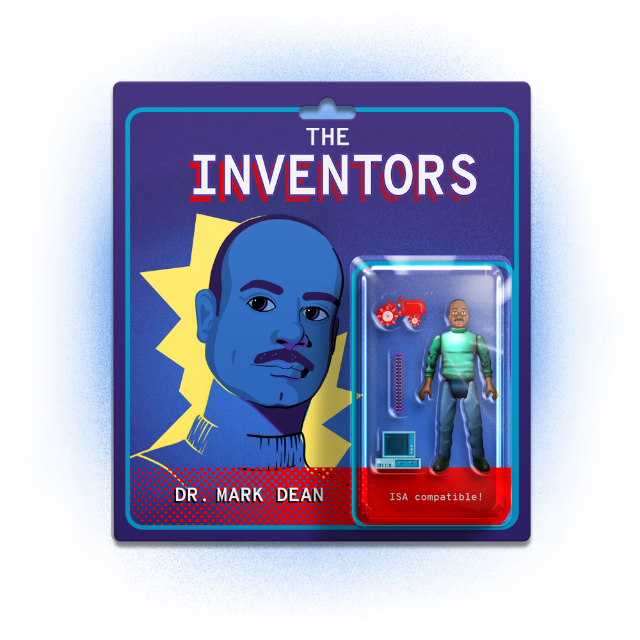

Subscribe to the podcast to receive new episodes as soon as we release them
Season 6, Episode 3
Dr. Mark Dean: The Inventor Who Made the Computer Personal

Dr. Mark Dean has a superpower. He wasn’t born with it. He wasn’t exposed to high levels of radiation. It’s a power he learned from his father. And because of it, he was able to revolutionize the personal computer.
David Bradley explains how in the 1980s, IBM had a reputation for building big, enterprise mainframes. No one believed IBM could make a competitive PC. But that’s exactly what “Project Chess” was tasked with creating. Tony Hey describes the monumental shift in strategy it was for IBM to enter the PC market. Pete Martinez and Dennis Moeller recount their days working with Mark as part of the skunkworks project. And their strategy for creating a computer in under a year changed the personal computing industry forever—opening it to innovators outside the walls of IBM.
Mark Dean holds 3 of the 9 patents for the IBM 5150—the first IBM PC—including the revolutionary ISA bus. He then went on to lead the team that created the first gigahertz microprocessor, and eventually taught at the University of Tennessee. Mwamba Bowa shares her most cherished lesson from the inventor—how to cultivate that super power for herself.
00:05 - Saron Yitbarek
It's 1980 and at Bud's bar and Boca Raton, Florida, a dozen computer engineers are milling around, drinking beers, eating pizza, nothing fancy. They're definitely different from the famous showmen of Silicon Valley. But these engineers are about to change the world just as profoundly. By the time they're done, Time Magazine will put their creation on its cover and call it “the person of the year.” But the person just walked in, Mark Dean, he's not even going to be photographed, which is a shame because everything that's about to happen hinges on him.
00:52 - Saron Yitbarek
All season, we've been tracking some of the inventors and engineers and coding wizards who built our tech future without ever getting famous in the process. And the story of Mark Dean is a classic example. You've maybe never heard of them, but you should have, because when IBM decided to move into the PC market, it was Mark Dean and the team of engineers at Bud's Bar who made it happen. Most of us, when we think about the birth of personal computers, maybe we think about the epic face-off between IBM and Apple. We think about that famous 1984 commercial.
01:32 - Saron Yitbarek
Well, this is the story behind that story before anybody was really watching. Mark Dean and his team down at Boca Raton built the machine that launched IBM into the PC market. They built the machine that changed everyone's idea about what IBM could be. They built the machine that launched a million clones. This is Command Line Heroes, an original podcast from Red Hat, and I'm your host, Saron Yitbarek.
02:11 - Mark Dean
I grew up in Tennessee, went to the University of Tennessee, always wanting to work in computers and way back then that was before computers were really around.
02:20 - Saron Yitbarek
Mark Dean was born in 1957. He spoke about his early life in a Comcast cable interview with Susan Shaner back in 2009.
02:31 - Mark Dean
My father, he was a tinkerer. He built things and I kind of got that from him. So I built a small game machine when I was in high school. So I just love putting things together and I loved electronics. So I knew I wanted to work in the computer industry and I knew I wanted to work for IBM, which was a funny thing how it really turned out.
02:55 - Saron Yitbarek
Working at IBM was a long shot for a kid who grew up Black in Jefferson City, Tennessee. His dad, for example, had an engineer's mind, but never had an opportunity to see how far he could stretch himself.
03:10 - Mark Dean
He never had a chance to go to a four year and finish or get his degree. He worked and managed a couple of the dams and the TVA system, Tennessee Valley Authority, and he's self-taught and he built a tractor from scratch.
03:26 - Saron Yitbarek
Dean worked with his dad on that tractor watching to see how a little faith in one's abilities can lead to amazing results even if a racist world tries to slow you down. So when Dean inevitably heard suggestions that someone like him couldn't be an engineer, like the guy at school who told him he was too smart to be Black, Dean held on to the example his father set.
03:54 - Mark Dean
I grew up with this stuff and I take a little bit from him. If I could take just a smidge of his intelligence, I said I would be a pretty well off.
04:06 - Saron Yitbarek
Along with dad's inspiration, Dean credits his education at the University of Tennessee for helping him land a job at IBM in 1979. At the time a lot of pieces were being moved around at “Big Blue”, but they were being moved quietly.
04:25 - David Bradley
In the 1980s, IBM was a very secretive company.
04:31 - Saron Yitbarek
David Bradley was one of the engineers who worked with Mark Dean down at Boca Raton.
04:36 - David Bradley
They didn't tell anybody what they were doing, held their cards very close to their vest. And so when we decided to do a personal computer, that was one of the things that was going to be very secret.
04:52 - Saron Yitbarek
When IBM executives decided to get into the personal computer game to build something smaller than a refrigerator that you could plug into at home, it really wasn't an obvious fit. They were known for mainframes, huge multi-million dollar machines. One analyst sniffed that IBM building a personal computer would be like an elephant learning how to tap dance. And yet the invention of the integrated circuit had suddenly made computers potentially much smaller. An enormous new market was on the horizon and everyone was racing toward that same goal.
05:33 - Saron Yitbarek
So IBM assembled an elite team of engineers to pull off the nearly impossible, deliver a PC in one year. They called their mission “Project Chess.” Data scientist, Tony Hey explains just how big a jump this was.
05:55 - Tony Hey
IBM's Project Chess was for them extremely innovative. They'd only just got past the stage where they introduced separate hardware and software, but they still were at the stage of giving away the software in order to sell the hardware of their mainframes. But in 1980, they had observed the rise of the Apple II and they saw that that was doing well. And they realized if they wanted to dominate the PC market, like they dominated the mainframe market, they really needed to move fast.
06:29 - Saron Yitbarek
Hence the one-year deadline. To give you some perspective, a project like this at IBM would normally play out over five years, but the execs knew their window of opportunity was closing. They needed it done yesterday and they needed it done under the radar.
06:50 - Pete Martinez
Nobody even knew where Boca Raton was.
06:53 - Saron Yitbarek
Pete Martinez was working at IBM as a product engineering manager at the time. He was one of only a few employees who knew about the secretive Project Chess.
07:05 - Pete Martinez
When I joined IBM, we had about 1,500 employees in Boca Raton, incredibly secretive organization, because everything IBM would do back then was more than closed. So we didn't even know we could not share anything that we were doing with our families or anybody else.
07:25 - Saron Yitbarek
So to recap, build a PC, do it in secret and do it in, yeah, like 12 months.
07:32 - Pete Martinez
It was started in headquarters, but Don Estridge was given the role of the project team lead. So the first thing he assembled was a group of 12, which became the dirty dozen. They were responsible for creating the original design and start pulling it together. So it was actually skunkworks and very, very long nights, very, very arduous type of work. But they were on a mission.
07:59 - Saron Yitbarek
That dirty dozen, which we saw at the top of this episode over at Bud's Bar, was supported by Mark Dean and the tech he developed.
08:07 - Pete Martinez
Everyone brought a different component to the table. Mark had a lot of architecture background. Dave Bradley was working on the bios components, so the interface to the software. And then we had people that were doing the physical design of the box that would hold this thing. So it was very, very multidisciplinary team to pull it together.
08:29 - Saron Yitbarek
This league of engineering superheroes tackle the project from multiple angles at once because Project Chess was attempting something that had never been done before. To come out with a new PC in one year, they'd need to make use of third party hardware and software. They were grabbing off the shelf components from Motorola and Intel. They didn't have time to create their own proprietary parts.
08:59 - Pete Martinez
Project Chess was an experiment by IBM seeing what could be put together by industry components in a very short amount of time. The reason a five-year design cycle or development cycle in IBM, because we used to develop all the parts from scratch. So all of the silicone that had to be developed, all the boxing had to be developed, everything was done from scratch, including the software. What we opted to do says what if we took parts that were off the shelf and started creating a component, a solution, a system, and bypassing all of the development cycle in terms of the guts of it. So it became much more of a systems integration process.
09:40 - Saron Yitbarek
Sounds like a good idea, right? Grab a cassette from here, a printer device from over there. Problem was those elements weren't designed to communicate with each other. They weren't designed to be part of one harmonious PC. So if Project Chess was ever going to succeed, they'd need something that could work as a translator. Mark Dean was about to take on that problem, but he had no idea that by solving this dilemma, he was about to create a whole philosophy of computer design. That's secretive IBM that David Bradley described was about to make way for an IBM like nobody had seen before.
10:28 - Saron Yitbarek
To allow for scaling and peripherals at a never before attempted level, Mark Dean needed to build what we now call the ISA bus, an industry standard architecture bus that would let expansion cards connect to the computer's motherboard. The bus would be the translator between all those off the shelf components they had to use.
10:50 - Dennis L. Moeller
The term ISA came along later.
10:53 - Saron Yitbarek
Dennis Moeller developed the bus with Mark Dean back then they were calling it the PC/AT bus.
11:01 - Dennis L. Moeller
The PC/AT bus, or the PC/AT I/O channel, which was a super side of the PC, was done in a way that anything developed for the PC should be able to be reused. And then with the added performance features, you could do more powerful add-ons.
11:23 - Saron Yitbarek
IBM engineers finish their PC on time after just one year of work. But what they made in 1981 might not have been an obvious game changer. It was an entry-level machine with 16K of memory. And yet that first bus of theirs, which made possible the very first IBM PC, was the beginning of something incredible. And its greatness start to become more obvious when the next generation came along.
11:53 - Dennis L. Moeller
The original PC had the eight bit bus and the PC/AT took advantage of a couple of important features on the 286, and that was a larger address range. So more memory addressability. We had to expand the bus somehow to expose that so that these add-on devices could be built. And at the same time that we did that, we added some of the additional support for interrupts and DMA channels and a bus master capability. So basically just made a super set of the original PC eight bit bus that was 16 bits wide.
12:38 - Dennis L. Moeller
So higher performance, more address ability, more support features in terms of DMA and interrupts and spent a lot of time working to ensure compatibility so that the bulk of those devices that had been already developed for the eight bit bus still worked and could be used on the new bus.
13:02 - Saron Yitbarek
Can you guess where this is heading? There was a serious knock-off effect.
13:07 - Dennis L. Moeller
It allowed a whole industry of people supplying add-on cards and software for the PC that greatly enhance the value of it and really kick-started the PC industry that took off then with PC clone makers and other developments that led us to where we are today.
13:30 - Saron Yitbarek
Allowing a whole industry to supply peripherals and software for the IBM PC had one other effect too. In order to have that kind of modular architecture, you pretty much have to have an open architecture. So the machine's technical information was printed out in a reference manual and handed to the public. IBM in their race to enter the PC market had also edged toward an open source philosophy. IBM's PC/AT supercharged by that 16 bit ISA bus was released in 1984, the same year that Apple produced their famous Orwellian Superbowl commercial. In it, Apple promised that their computers would set people free.
14:24 - Saron Yitbarek
What was really happening in that moment was that two very different definitions of freedom were being defined. Two different visions of the future. In Apple's vision, a proprietary and closed system would offer up a highly curated world for the user to live in. And then there was IBM's vision, a universe to live in open and vast.
14:48 - Mark Dean
You need to do things in the open. You need to build an industry to build a greater opportunity. You could have a proprietary design and own the entire market, but the entire market would be small. Let people play and let them grow the market and then you have a bigger pond to swim in and you just go after that bigger opportunity.
15:08 - Saron Yitbarek
That's Mark Dean looking back at how they shook things up. But at the time ...
15:14 - Mark Dean
We really didn't realize what we were doing.
15:18 - Saron Yitbarek
Mark Dean speaking at the American Museum of Science and Energy in 2019.
15:24 - Mark Dean
So we didn't realize how much it would affect everyone and enable so much innovation. And just like all previous innovations, their creators could not have fully understood how they would change the world. Now, the PCs, laptops, tablets and your smartphones are all integral parts of our lives, helping us create and share information, be entertained and to get things done. I was in the right place at the right time, not knowing any better and things worked out. So I've been fortunate.
15:58 - Saron Yitbarek
In fact, we've all been fortunate that Mark Dean was in the right place at the right time. David Bradley describes how companies always have the potential to go down the open path and other times down the closed one.
16:13 - David Bradley
It's interesting to speculate what would have happened if IBM had not entered the personal computer market and we continued to work with Apple's product line. IBM brought credence and veritas to the personal computer industry. Here's a product that you can trust. Now, IBM also brought out a very open system, which by the way is the way Apple was in 1980, 1981. It wasn't until later with the Macintosh that Apple became a much more closed system, but IBM chose to make a very open system to invite the rest of the industry to participate with us, to build adaptper cards and write software that would run on the IBM personal computer.
17:01 - David Bradley
And I think that's a great deal of the reason why the IBM PC was so successful.
17:10 - Saron Yitbarek
And it was successful. Tony Hey describes that release as an industry defining event.
17:15 - Tony Hey
IBM's entry into the market was huge and IBM sold many, many more than their marketeers have expected. They hadn't expected it would sell anything like that. It sold a quarter of a million in one month in 1984. They sold several million machines and it was just on a scale several orders of magnitude more than had been seen before in a PC market. There wasn't a PC market. They created a PC market.
17:45 - Saron Yitbarek
And as Dennis Moeller told us, that PC and the open ethos around personal computers is still with us today.
17:54 - Dennis L. Moeller
It was a structure that made sense and people copied and economies of scale drove performance up and costs down. And now you can go on YouTube and do a search, let's say “gaming PC build”, and you'll find all sorts of videos of people selecting a motherboard and selecting a graphics card or other IO devices and a case and a power supply. And it's all standardized and modular and you can put together a very powerful PC and do it at home.
18:33 - Saron Yitbarek
Without Mark Dean and that top secret team down at Boca Raton, it's anyone's guess how our PC ecosystem might've evolved. There was a faith that Mark Dean had in his own ability to build. Remember that story about watching his dad build a tractor from scratch. He learned something fundamental from his dad. It made him into an engineer who believed implicitly that building a PC in 12 months with off the shelf parts was not just doable, but a fantastic opportunity for rejigging the way things are done. Here's Mark Dean again, speaking at the American Museum of Science and Energy back in 2019.
19:23 - Mark Dean
So everyone asks me, what does it feel like to invent? What is it like to have more than 40 patents? The real truth is most of my inventions are just a result of what I would call my superpower. So here's my superpower, a vivid imagination and a confidence to believe you can build anything. That's my superpower.
19:49 - Saron Yitbarek
After his success with the first IBM PC, Dean continued to innovate to build. In 1999, his team at IBM developed the first gigahertz chip. That was a breakthrough all on its own. A data processing triumph that allowed one billion calculations per second. But his greatest contribution may have come after he left IBM in 2013. Because since then, he's been working to lift up a generation of students.
20:21 - Mark Dean
Now I'm not unique. Everybody has a superpower, but most don't realize what it is or have the opportunity to develop it and focus on their superpower. I've had that opportunity.
20:35 - Saron Yitbarek
Dean taught at his alma mater the University of Tennessee, which gave him the title of distinguished professor, that became professor Emeritus when he retired in the summer of 2020. He'd spent years encouraging that sheer faith and gumption that he learned from his dad.
20:55 - Mwamba Bowa
The biggest lessons I have learned from Dr. Dean is to stay true to myself, also to believe in myself and have competence in my abilities as an engineer, as a researcher.
21:10 - Saron Yitbarek
Mwamba Bowa worked with Dean when he was her thesis supervisor.
21:14 - Mwamba Bowa
My thesis was 3D printing circuits, conductive circuits. And I think when I pitched it to him, I wasn't sure that he would go for it because it was an undertaking in itself. One of the things I remember from that conversation is that he told me like, if you believe in something, you need to speak up about it and other people will believe in it when you have that confidence to back it up.
21:46 - Saron Yitbarek
Whether at IBM or at the University of Tennessee, Dean instills that confidence in the process, a belief that building something comes down to a few knowable, achievable elements. He's even got a formula for it.
22:10 - Mark Dean
I actually believe anything that we can imagine can be realized, that they're just a simple matter of four key elements that make anything possible, time, money, risk, and determination.
22:18 - Saron Yitbarek
He also makes a crucial point about leaning into that space just outside of your comfort zone, the way they definitely had to - down in Boca Raton.
22:28 - Mark Dean
Most great innovations that have had the biggest impact on society have occurred in the gaps between disciplines, putting ideas together from multiple sources and disciplines to solve a problem or to address an opportunity. And I'd have to say the PC falls right into that category. Innovation being the application of invention to solve a problem is something I'm far more proud of than my inventions themselves. I've got all these patents, but the real value is what we did with them. And so invention is worthless unless it has an impact, unless it changes people lives or helps people live better, make- have more success, be happy.
23:11 - Mark Dean
And so I gained tremendous joy watching people use what we've built. That's where I kind of get my jollies. That's where the joy comes from.
23:26 - Saron Yitbarek
Sometimes it's hard to remember that the reality we live with today was created by a series of choices that these people were making decades ago.
23:36 - Pete Martinez
This was the golden age of personal computing. The golden age means this is where an industry thrived, that the innovation took complete new steps in both technology and manufacturing, in sales, in distribution, in the creation of software and such. So it was a massively creative time very similar to Florence during the Renaissance.
24:03 - Saron Yitbarek
And it all started with Mark Dean and those dozen or so engineers hanging around that bar down in Boca Raton.
24:10 - Pete Martinez
We were able to enjoy it here in South Florida because it became the epicenter of everything that was going on. The impact that had on society is probably the most significant to a lot of us because technology for technology's sake is good. But technology for improvement of the human condition is even better. And if you're able to do both, it's a greater success.
24:38 - Saron Yitbarek
By the end of the '80s, the first question you asked about new machines, new software is, is it PC-compatible? An army of clones and our new attitude of openness had swept the world of computing and all because of that attitude Dean learned from his dad, watching him build that tractor, work with what's at hand, wrench things together if you have to, but believe you can build it because nobody knows how big that thing might one day become. When the IBM PC was first released in 1981, there were nine patents associated with it. Of those, three belonged to Mark Dean.
25:23 - Saron Yitbarek
He then went on to earn more than 40. He's the son of a man who never had the chance to get a university degree. And today Dean's an IBM fellow and an inductee of the National Inventors Hall of Fame. The ISA bus his team developed paved the way for future generations of buses, the peripheral component interconnect, PCI, and the accelerated graphic port, AGP. And it wasn't going to stop there. Every generation has found new, better ways to allow computer components to communicate. Mark Dean's philosophical breakthrough born out of necessity has become a standard we could never live without.
26:11 - Saron Yitbarek
Next time we meet the man who brought us the dinosaurs of Jurassic Park, the T-1000 in Terminator 2 and so much more, Silicon Graphics co-founder Marc Hannah. Until then, I'm Saron Yitbarek and this is Command Line Heroes. Keep on coding.